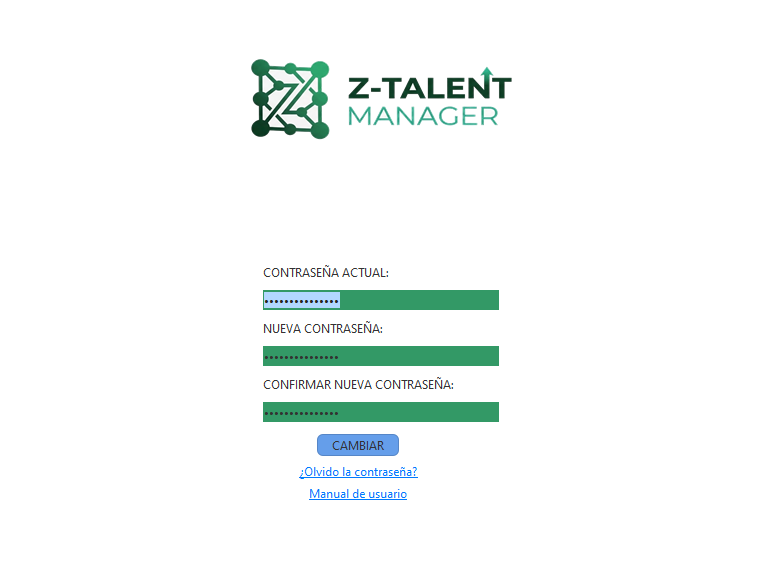
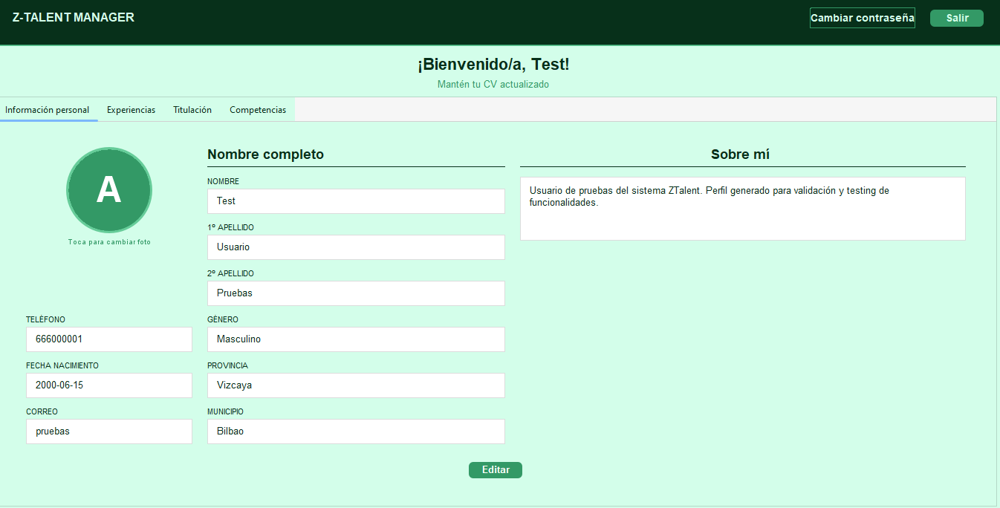
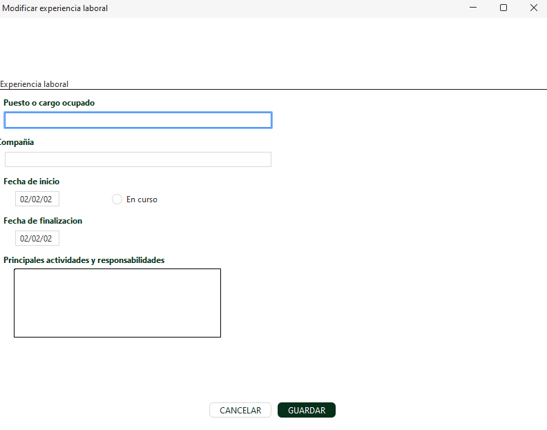
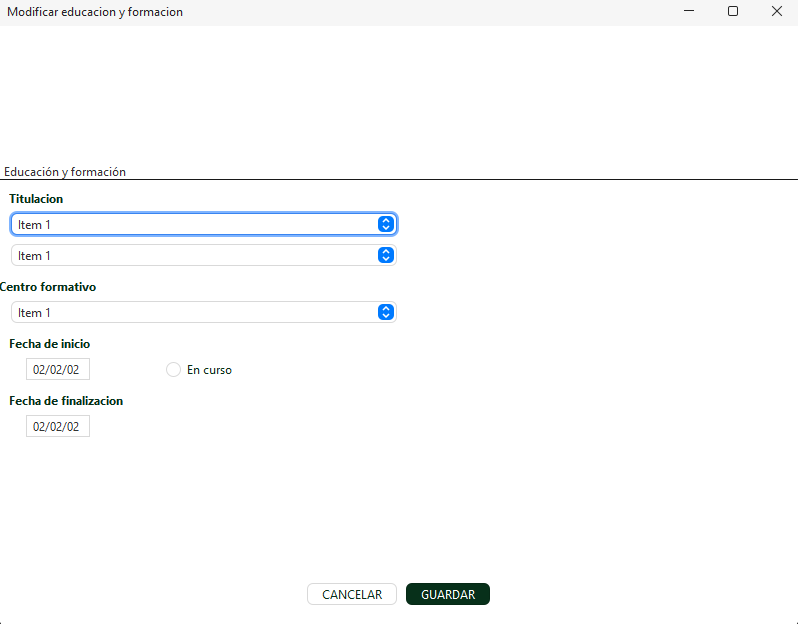
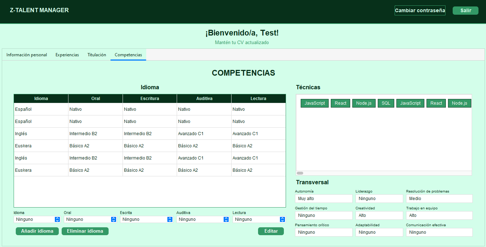
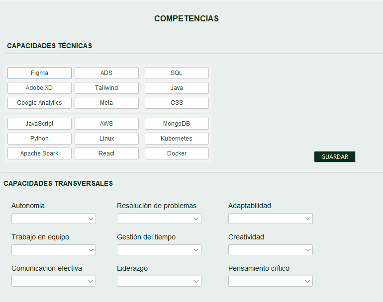
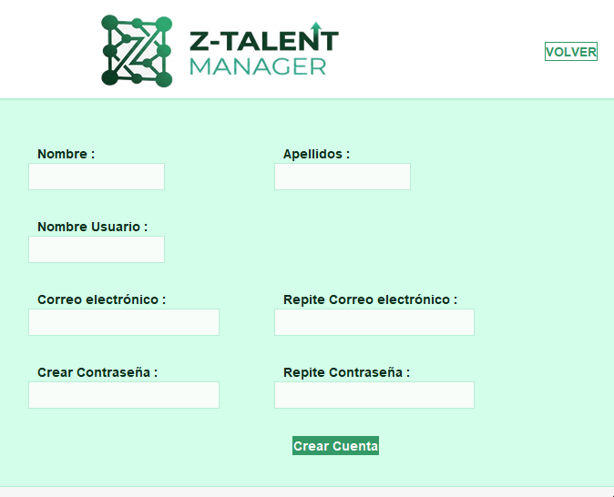
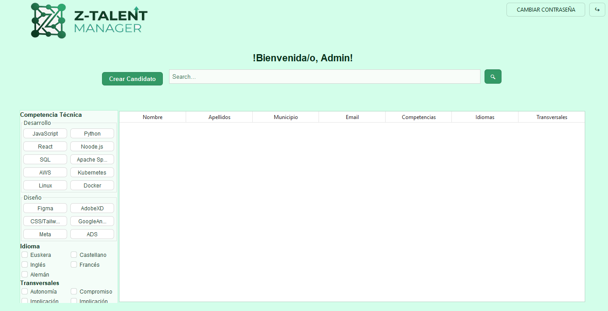

Login
Esta sección es la puerta de entrada a tu perfil profesional. Para garantizar la seguridad de tu información y personalizar tu experiencia, es necesario que te identifiques en nuestro sistema.

Bienvenido a la guía completa de uso de nuestra aplicación. Aquí encontrarás explicaciones detalladas y respuestas a preguntas frecuentes.
Esta sección es la puerta de entrada a tu perfil profesional. Para garantizar la seguridad de tu información y personalizar tu experiencia, es necesario que te identifiques en nuestro sistema.
Dentro de la configuración de tu perfil, dispones de la opción de modificar tu clave de acceso en cualquier momento. Esta función es ideal si deseas actualizar tu seguridad o simplemente cambiar tu clave actual por una que te resulte más sencilla de recordar.

Para garantizar la seguridad y accesibilidad de tu perfil profesional, el sistema permite actualizar tu clave desde la configuración siempre que conozcas la contraseña actual y desees sustituirla por una más sencilla de recordar; no obstante, en caso de haber olvidado tus credenciales por completo, deberás completar un formulario de Google para verificar tu identidad, permitiendo así que el administrador valide tu solicitud, realice el cambio interno y te envíe las nuevas credenciales de acceso por correo electrónico para que puedas retomar tu actividad de inmediato.

Este apartado constituye la base de tu identidad dentro de la plataforma. Es el espacio donde se centralizan tus datos fundamentales, permitiendo que tanto el sistema como los reclutadores tengan una vía directa y profesional para comunicarse contigo.


Esta sección está dedicada a construir tu cronología profesional. Es el espacio donde puedes poner en valor las funciones desempeñadas y los logros alcanzados en cada uno de los puestos que has ocupado a lo largo de tu carrera, permitiendo a los reclutadores comprender tu potencial y experiencia práctica.


Este apartado está destinado a certificar tu base de conocimientos y preparación técnica. Es el lugar donde se registran oficialmente todos tus hitos educativos, desde títulos universitarios o de formación profesional hasta certificaciones especializadas, proporcionando el respaldo académico necesario para tus candidaturas.


En un mercado laboral globalizado, este apartado es fundamental para demostrar tu capacidad de comunicación en diferentes entornos y culturas. Aquí puedes detallar tus conocimientos de idiomas, especificando tu dominio tanto a nivel escrito como hablado para que las empresas identifiquen tu potencial internacional.


Utiliza las herramientas de búsqueda avanzada para encontrar ofertas de trabajo que coincidan con tu perfil. Filtra por sector, ubicación, tipo de contrato, salario y experiencia requerida. Guarda tus búsquedas para recibir notificaciones automáticas cuando se publiquen nuevas ofertas que coincidan.


Descarga el instalador compatible con tu sistema operativo desde la sección de Descarga. Ejecuta el archivo y sigue las instrucciones en pantalla.
La aplicación requiere Windows 10 o superior, macOS 10.15 o superior, o una distribución moderna de Linux.
Después de iniciar sesión, haz clic en 'Editar' y completa todos los campos: experiencia laboral, formación académica, habilidades y guarda.
Selecciona las habilidades que buscas y los perfiles se cargarán automáticamente junto a sus currículums.
Después de iniciar sesión, haz clic en "Crear Usuario" y completa todos los campos.
Sí, ofrecemos soporte técnico a través de correo electrónico en soporte@zabalburu.com.